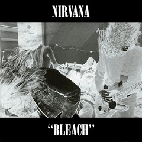
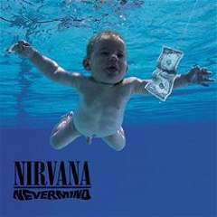

Альбомы
Bleach («Отбеливатель») — дебютный студийный альбом американской гранж-группы Nirvana, выпущенный 15 июня 1989 года на независимом лейбле Sub Pop. Первоначально альбом был продан в количестве 30 000 копий, но на волне успеха второй пластинки Nirvana «Nevermind» дебютный альбом группы получил статус платинового.
Список композиций:
- «Blew»
- «Floyd the Barber»
- «About a Girl»
- «School»
- «Love Buzz»
- «Paper Cuts»
- «Negative Creep»
- «Scoff»
- «Swap Meet»
- «Mr. Moustache»
- «Sifting»
- «Mouse»
Nevermind — второй и самый коммерчески успешный альбом американской гранж-группы Nirvana. Был выпущен 24 сентября 1991 года на лейбле DGC Records, продюсером записи выступил Бутч Виг. Создавая этот альбом, Курт Кобейн стремился вывести музыку за пределы ограничений гранж-сцены Сиэтла, находясь под влиянием таких групп как Pixies и используя их динамику.
Список композиций:
- «Smells Like Teen Spirit»
- «In Bloom»
- «Come as You Are»
- «Breed»
- «Lithium»
- «Polly»
- «Territorial Pissings»
- «Drain You»
- «Lounge Act»
- «Stay Away»
- «On a Plain»
- «Something in the Way»
In Utero (с лат. — «В утробе») — третий и последний студийный альбом американской гранж-группы Nirvana, выпущенный 13 сентября 1993 года на лейбле DGC Records.
Список композиций:
- «Serve the Servants»
- «Scentless Apprentice»
- «Heart-Shaped Box»
- «Rape Me»
- «Frances Farmer Will Have Her Revenge on Seattle»
- «Dumb»
- «Very Ape»
- «Milk It»
- «Pennyroyal Tea»
- «Radio Friendly Unit Shifter»
- «tourette’s»
- «All Apologies»